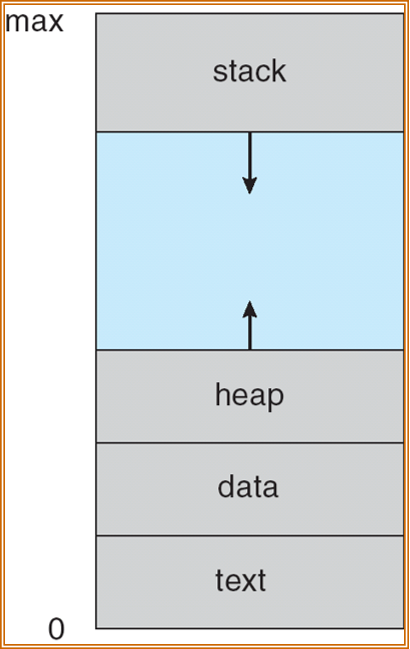

操作系统¶
约 6926 个字 65 行代码 3 张图片 预计阅读时间 24 分钟
Abstract
授课教师：寿黎但
用户程序对内存的视图和内核程序对内存的视图不一样。那我们在系统调用时，我们如何规划一块内存存放参数，内核又如何知道到哪里去访问参数呢？
Success
我们一般有三种方法
Intro¶
什么是一个操作系统?
操作系统能干什么?
- 进程管理
- 内存管理
- 存储管理
或者说，一个好的操作系统提供了计算机系统这些能力： - Multiplexing(复用) - Isolation(隔离) - Abstraction(抽象)
系统调用(System Call)的类型¶
-
Process Control
-
File Management
-
Device Management
-
Information Maintenance
-
Communications
-
Protections
系统程序(System Programs)¶
系统调用和系统程序的区别
系统调用是一种软件中断。
Interrupt 可以分为两种：硬件中断/软件中断(Trap)。软件中断可以由于错误导致，也可以由于系统调用。在 RISC-V 术语中：
中断的处理
OS Structures¶
回顾计算机系统的组成
虚拟机 (Virtual Machine)¶
虚拟机是“分层”概念的具体实现的代表之一。具体来说，一个典型的虚拟机的架构大致如下：
-
最上层/ 客户操作系统，即被安装的系统；
-
第二层/ Hypervisor (虚拟机监控器) 为各 VM 创建的虚拟硬件层；
-
第三层/ Hypervisor
-
最底层/ 物理硬件*
最底层的“物理硬件”指的是什么？
这是针对 Hypervisor 的视角来说的。目前有两种流行的 Hypervisor ：
-
Type 1 Hypervisor ：裸金属的，直接视机器上的物理硬件为自己的硬件。它本身相当于是一个精简的专用 OS 来驱动和管理硬件。
-
Type 2 Hypervisor ：宿主型的，视宿主操作系统 (Host OS) 的内核及其提供的 API 接口为自己的硬件。
进程 Process¶
1. 进程概念 (Process Concept)¶
- 定义：进程是“一个正在执行中的程序”。操作系统执行各种程序，例如批处理系统中的“作业”（ jobs ）或时间共享系统中的“用户程序”或“任务”（ tasks ）。
-
进程的内存结构
一个进程在内存中包含：
-
文本区域 (text section)：即代码 (code)；
-
程序计数器 (program counter)；
-
栈 (stack)：用于存放函数参数、局部变量和返回地址；
-
数据区域 (data section)：存放全局变量；
-
堆 (heap)：用于动态分配内存。
-
-

2. 进程状态 (Process State)¶
进程在其执行过程中会改变状态。
- new (新建)：进程正在被创建；
- running (运行)：指令正在被执行；
- waiting (等待)：进程正在等待某个事件发生（例如 I/O 完成）；
- ready (就绪)：进程等待被分配到处理器；
- terminated (终止)：进程已完成执行.

3. 进程控制块 (PCB)¶
- 定义： PCB 是与每个进程相关联的信息集合。
- 包含信息：
- 进程状态
- 程序计数器
- CPU 寄存器内容
- CPU 调度信息
- 内存管理信息
- 记账信息
- I/O 状态信息
- 上下文切换 (Context Switch)：当 CPU 切换到另一个进程时，系统必须保存旧进程的状态（到 PCB ）并加载新进程的保存状态。这个过程是开销，因为系统在切换时不做有用功。
4. 进程调度 (Process Scheduling)¶
这部分介绍了操作系统如何管理和调度进程。
- 调度队列 (Queues)：
- 作业队列 (Job queue)：系统中所有的进程集合。
- 就绪队列 (Ready queue)：所有在主存中、准备好并等待执行的进程集合。
- 设备队列 (Device queues)：等待 I/O 设备的进程集合。
- 进程会在这些队列之间迁移。
- 调度程序 (Schedulers)：
- 长期调度程序 (Long-term scheduler)：也称“作业调度程序”，它选择哪些进程应被带入内存（就绪队列）。它控制着多道程序的程度，并且调用频率很低（秒或分钟）。
- 短期调度程序 (Short-term scheduler)：也称“CPU 调度程序”，它选择下一个应该执行的进程并分配 CPU。它的调用频率非常高（毫秒级），必须很快。
- PPT 提到， UNIX 和 Windows 不使用长期调度程序。
- 还提到了中期调度 (Medium Term Scheduling)，涉及将进程换出内存。
- 进程类型：
- I/O 密集型 (I/O-bound)：花费更多时间进行 I/O ，有许多短暂的 CPU 爆发。
- CPU 密集型 (CPU-bound)：花费更多时间进行计算，有少数很长的 CPU 爆发。
5. 进程操作 (Operations on Processes)¶
这部分讨论了进程的创建和终止。
- 进程创建 (Process Creation)：
- 父进程创建子进程，形成一个进程树。
- 资源共享：父子进程可以共享所有资源、部分资源 或不共享资源。
- 执行：父子进程可以并发执行，或者父进程等待子进程终止。
- UNIX 示例：
fork()系统调用用于创建新进程。exec()系统调用通常在fork()之后使用，用一个新程序替换进程的内存空间。PPT 中提供了一个 C 语言示例代码。
- 进程终止 (Process Termination)：
- 进程执行最后一条语句并请求操作系统删除它（例如调用
exit）。 - 父进程可以终止子进程的执行（例如调用
abort），原因可能包括子进程超出了分配的资源 或分配给子进程的任务不再需要。 - 级联终止 (Cascading termination)：如果父进程退出，其所有子进程也可能被终止。
- 在某些系统中，子进程可能成为“孤儿”进程，并被“init”进程（ PID=1 ）收养。PPT 指出在 MacOS 上，这个进程被称为
launchd。
- 进程执行最后一条语句并请求操作系统删除它（例如调用
6. 协作进程 (Cooperating Processes)¶
- 独立进程不受其他进程影响，而协作进程可以影响或被其他进程影响。
- 协作的优势：信息共享、计算加速（多 CPU ）、模块化 和方便性。
- 生产者-消费者问题 (Producer-Consumer Problem)：
- 这是一个协作进程的范例。生产者进程生产信息，消费者进程消费信息。
- 有界缓冲区 (bounded-buffer) 假定缓冲区大小固定。PPT 提供了使用共享内存解决有界缓冲区问题的伪代码 。
例子
问题 三个进程 P1、P2、P3 互斥使用一个包含 N (N>0) 个单元的缓冲区。
-
P1 每次用
produce()生成一个正整数并用put()送入缓冲区某一空单元中 -
P2 每次用
getodd()从该缓冲区取出一个奇数并用countadd()统计奇数的个数 -
P3 每次用
geteven()从该缓冲区中取出一个偶数并用counteven()统计偶数个数
请用信号量机制实现这三个进程的同步与互斥活动，并说明所定义的信号量的含义。要求使用伪代码。
解答
这是一个典型的生产者-消费者问题的变种。与标准问题不同的是，消费者被分为两类（奇数消费者和偶数消费者），因此生产者在放入数据后，需要根据数据的奇偶性来唤醒不同的消费者。
我们需要定义以下四个信号量：
mutex- 初值： 1
- 含义： 互斥信号量，用于保证三个进程对缓冲区的互斥访问（即同一时刻只能有一个进程在操作缓冲区）。
empty- 初值： N
- 含义： 资源信号量，表示缓冲区中当前空闲单元的个数。
odd- 初值： 0
- 含义： 资源信号量，表示缓冲区中当前奇数的个数。P2 需要等待此信号量。
even- 初值： 0
- 含义： 资源信号量，表示缓冲区中当前偶数的个数。P3 需要等待此信号量。
伪代码如下：
// 全局变量与信号量定义
semaphore mutex = 1; // 互斥锁
semaphore empty = N; // 空闲缓冲区数量
semaphore odd = 0; // 缓冲区内奇数数量
semaphore even = 0; // 缓冲区内偶数数量
// ----------------------
// 进程 P1 (生产者)
// ----------------------
process P1() {
int x;
while (true) {
x = produce(); // 生成一个正整数
P(empty); // 1. 申请一个空缓冲区单元（如果没有空位则等待）
P(mutex); // 2. 申请进入临界区（互斥访问缓冲区）
put(x); // 将 x 放入缓冲区某一空单元
V(mutex); // 3. 退出临界区，释放互斥锁
// 4. 根据 x 的奇偶性，唤醒对应的消费者
if (x % 2 != 0) {
V(odd); // 如果是奇数，增加奇数信号量，可能唤醒 P2
} else {
V(even); // 如果是偶数，增加偶数信号量，可能唤醒 P3
}
}
}
// ----------------------
// 进程 P2 (奇数消费者)
// ----------------------
process P2() {
int y;
while (true) {
P(odd); // 1. 申请取走一个奇数（如果缓冲区无奇数则等待）
P(mutex); // 2. 申请进入临界区
y = getodd(); // 从缓冲区取出一个奇数
V(mutex); // 3. 退出临界区
V(empty); // 4. 释放一个空缓冲区单元（增加空位数，可能唤醒 P1）
countodd(y); // 统计奇数个数
}
}
// ----------------------
// 进程 P3 (偶数消费者)
// ----------------------
process P3() {
int z;
while (true) {
P(even); // 1. 申请取走一个偶数（如果缓冲区无偶数则等待）
P(mutex); // 2. 申请进入临界区
z = geteven(); // 从缓冲区取出一个偶数
V(mutex); // 3. 退出临界区
V(empty); // 4. 释放一个空缓冲区单元（增加空位数，可能唤醒 P1）
counteven(z); // 统计偶数个数
}
}
-
互斥控制 (
mutex)：- 无论是
put、getodd还是geteven，都涉及对共享缓冲区数据结构的操作（如修改指针、读取数据），因此必须用P(mutex)和V(mutex)包裹起来。
- 无论是
-
同步控制 (
empty,odd,even)：- P1 与 P2/P3 的同步： P1 在放入数据前必须检查是否有空间 (
P(empty))。P2 或 P3 取出数据后，会释放空间 (V(empty))，从而允许 P1 继续生产。 - P1 通知 P2/P3：这是本题的关键点。P1 生产的数据不是通用的，必须区分类型。
- 当 P1 放入奇数时，执行
V(odd)，这会使得阻塞在P(odd)上的 P2 进程得以继续执行。 - 当 P1 放入偶数时，执行
V(even)，这会使得阻塞在P(even)上的 P3 进程得以继续执行。
- 当 P1 放入奇数时，执行
- P1 与 P2/P3 的同步： P1 在放入数据前必须检查是否有空间 (
-
死锁预防：
- 在所有进程中，必须先申请资源信号量（
empty/odd/even），再申请互斥信号量（mutex）。 - 如果顺序反过来（例如 P2 先
P(mutex)再P(odd)），假设缓冲区全空， P2 获得锁后发现没奇数于是等待odd，但因为 P2 拿着锁， P1 无法进入临界区去放入奇数，导致死锁。目前的顺序是正确的。
- 在所有进程中，必须先申请资源信号量（
7. 进程间通信 (Interprocess Communication, IPC)¶
这部分介绍了进程间通信和同步的机制。
- 两种模型：
- 共享内存 (Shared memory)
- 消息传递 (Message passing)
- 消息传递：
- 提供
send(message)和receive(message)操作。 - 直接通信：进程必须显式地命名对方（例如
send(P, ...)）。 - 间接通信：消息被发送到“邮箱”（ mailboxes ）或“端口”（ ports ）。进程通过共享邮箱进行通信。
- 提供
- 同步 (Synchronization)：
- 消息传递可以是阻塞的（同步） 或非阻塞的（异步）。
- 阻塞发送：发送方被阻塞，直到消息被接收。
- 阻塞接收：接收方被阻塞，直到有消息可用。
- 缓冲 (Buffering)：
- 通信链接上的消息队列可以有零容量、有界容量 或无限容量。
8. 客户端-服务器系统中的通信¶
这部分介绍了几种用于客户-服务器模型的 IPC 机制。
- 套接字 (Sockets)：
- 定义为通信的“端点”（ endpoint ）。
- 是 IP 地址和端口号的组合（例如
161.25.19.8:1625）。 - 通信在一对套接字之间进行。
- 远程过程调用 (Remote Procedure Calls, RPC)：
- 它抽象了网络系统中进程之间的过程调用。
- 使用存根 (Stubs) 作为服务器上实际过程的客户端代理。
- 客户端存根定位服务器并编组 (marshals) 参数。服务器端存根接收消息，解组 (unpacks) 参数，并执行过程。
- 远程方法调用 (Remote Method Invocation, RMI)：
- 这是 Java 中类似 RPC 的机制。
- 它允许一台机器上的 Java 程序调用一个远程对象上的方法。
进程同步 Synchronization¶
线程 Thread¶
文档以一个 Web 浏览器的开发为例，说明了为什么需要线程 。
- 单线程的问题： 如果程序采用简单的循环（检索数据、显示数据、获取输入），每个步骤都会阻塞，导致程序响应缓慢 。
- 初步尝试的缺陷： 尝试将任务分解成非常小的片段 或在循环中不断检查是否有任务要做 ，这样做虽然能略微提高响应速度，但效率极低 。
- 核心冲突： 程序既需要高响应速度（要求任务分解得极细），又需要高效率（要求执行大块代码），这两者是相互冲突的 。
- 线程解决方案： 多线程允许程序创建多个并行的执行流（例如，一个线程负责检索数据，一个负责显示，一个负责获取输入）。操作系统（ OS ）会负责这些线程的调度 ，从而同时解决了响应速度和效率的问题。
线程的优势与概念¶
-
优势
- 响应速度 (Responsiveness): 允许交互式应用程序即便在执行阻塞任务时也能继续响应用户 。
- 资源共享 (Resource Sharing): 线程默认共享进程的代码、数据和文件 。
- 经济性 (Economy): 创建和切换线程的开销远低于进程 。
- 利用多处理器架构 (Utilization of MP Architectures): 在多核系统上，多线程可以实现真正的并行执行，提高并发性 。
-
关键概念
- 单线程 vs. 多线程进程： 单线程进程只有一个执行流（一套寄存器和堆栈）；多线程进程共享代码、数据和文件，但每个线程拥有自己独立的寄存器和堆栈 。
- 并发 vs. 并行： 并发 (Concurrency) 是指多个任务在单核上交错执行（看起来像同时运行）。并行 (Parallelism) 是指多个任务在多核上真正同时执行 。
- 用户线程 vs. 内核线程： 用户线程由用户空间的线程库管理 （例如 Pthreads, Win32, Java 线程 ）。内核线程由操作系统内核直接支持和管理 （例如 Windows, Linux, Solaris ）。
多线程模型¶
多线程模型定义了用户线程和内核线程之间的关系。
-
多对一模型 (Many-to-One):
- 描述: 多个用户线程映射到一个内核线程 。线程管理在用户空间完成，效率高 。
- 缺点: 如果一个用户线程执行了阻塞的系统调用，整个进程都会被阻塞 。内核一次只能调度一个线程 。
- 示例: Solaris Green Threads , GNU Portable Threads 。
-
一对一模型 (One-to-One):
- 描述: 每个用户线程映射到一个内核线程 。
- 优点: 提供了更好的并发性，一个线程阻塞不会影响其他线程 。
- 缺点: 创建每个用户线程都需要创建一个内核线程，开销较大 。
- 示例: Windows , Linux , Solaris 9 及更高版本 。
-
多对多模型 (Many-to-Many):
- 描述: 多个用户线程映射到多个（或更少的）内核线程 。
- 优点: 非常灵活 。允许程序创建任意多的用户线程，而内核线程的数量可以由操作系统动态调整 。
- 示例: Solaris 9 以前的版本 , Go 语言的 Goroutines 。
-
二级模型 (Two-level Model):
- 描述: 类似于多对多模型，但增加了允许将某个用户线程“绑定”到特定内核线程的功能 。
- 示例: Solaris 8 及更早版本 。
线程问题¶
在使用线程时需要解决几个关键问题：
fork()和exec()的语义: 当多线程进程中的某个线程调用fork()时，是复制所有线程，还是只复制调用fork()的那个线程？ （exec()会替换整个进程）。- 信号处理 (Signal Handling): 在 UNIX 系统中，当一个事件（信号）发生时 ，应该将其传递给哪个线程？（例如，传递给应用信号的线程、进程中的所有线程、某些特定线程，或指定一个线程接收所有信号）。
- 线程取消 (Thread Cancellation): 如何提前终止一个线程 。
- 异步取消 (Asynchronous): 立即终止目标线程 。
- 延迟取消 (Deferred): 目标线程周期性地检查一个标志位，以决定是否应该自行终止 。
- 线程池 (Thread Pools): 预先创建一定数量的线程 。当需要执行任务时，从池中获取一个可用线程，而不是创建新线程 。这可以限制线程总数 ，且服务请求更快 。
- 线程特定数据 (Thread-Specific Data): 允许每个线程拥有自己私有的数据副本（也称线程本地存储, TLS ）。这在无法控制线程创建过程（如使用线程池）时很有用 。
- 调度程序激活 (Scheduler Activations): 在多对多或二级模型中，内核需要一种机制（称为“上调” (upcalls)）来通知用户级线程库内核线程的分配情况 ，例如当一个线程即将阻塞时通知库 。
具体实现¶
- Pthreads: 一个 POSIX 标准 (IEEE 1003.1c) API ，用于线程创建和同步 。它只定义了行为规范，具体实现可以是用户级的，也可以是内核级的 。
- Windows XP 线程: 采用一对一模型 。每个线程包含线程 ID、寄存器集、用户和内核堆栈以及私有存储区 ，这些构成了线程的上下文 (context) 。
- Linux 线程: Linux 称线程为“任务” (tasks) 。通过
clone()系统调用创建 ，clone()允许子任务共享父任务（进程）的地址空间 。 - Java 线程: 线程由 Java 虚拟机 (JVM) 管理 。可以通过继承
Thread类或实现Runnable接口来创建 。Java 线程有多种状态，如新建 (new)、可运行 (runnable)、阻塞 (blocked) 和死亡 (dead) 。
调度 Schedule¶
1. 基本概念 (Basic Concepts)¶
- CPU-I/O 爆发周期：进程的执行被建模为 CPU 执行（ CPU burst ）和 I/O 等待（ I/O burst ）的循环周期 。进程会在这两种状态之间交替 。
- CPU 调度程序：当 CPU 空闲时，操作系统必须从就绪队列 (ready queue) 中选择一个进程来执行 。
- 调度时机： CPU 调度决策可能在以下四种情况下发生 ：
- 进程从运行态切换到等待态（例如， I/O 请求） 。
- 进程从运行态切换到就绪态（例如，发生中断） 。
- 进程从等待态切换到就绪态（例如， I/O 完成） 。
- 进程终止 。
- 抢占式 (Preemptive) vs. 非抢占式 (Nonpreemptive)：
- 当调度只发生在情况 1 和 4 时，称为非抢占式 。
- 否则，调度称为抢占式（例如情况 2 和 3 ） 。
- 分派程序 (Dispatcher)：这是将 CPU 控制权交给短期调度程序所选进程的模块 。这个过程涉及：
- 上下文切换 (switching context)
- 切换到用户模式 (switching to user mode)
- 跳转到用户程序中的适当位置以重新启动程序
- 分派延迟 (Dispatch Latency)：分派程序停止一个进程并启动另一个进程运行所需的时间 。
2. 调度准则 (Scheduling Criteria)¶
评估调度算法的好坏有多个标准 ：
- CPU 利用率 (CPU utilization)：保持 CPU 尽可能繁忙 。
- 吞吐率 (Throughput)：单位时间内完成执行的进程数量 。
- 周转时间 (Turnaround time)：执行特定进程所需的总时间（从提交到完成） 。
- 等待时间 (Waiting time)：进程在就绪队列中等待所花费的总时间 。
- 响应时间 (Response time)：从提交请求到产生第一个响应所需的时间（适用于分时环境） 。
优化目标是：最大化 CPU 利用率 和吞吐率 ，同时最小化周转时间 、等待时间 和响应时间 。
3. 调度算法 (Scheduling Algorithms)¶
PPT 详细介绍了几种主要的调度算法：
- 先来先服务 (First-Come, First-Served, FCFS)：
- 顾名思义，最先请求 CPU 的进程最先获得 CPU 。
- PPT 通过两个例子展示了不同进程到达顺序如何显著影响平均等待时间 。
- 存在护航效应 (convoy effect)：短进程可能需要等待一个很长的进程释放 CPU 。
- 最短作业优先 (Shortest-Job-First, SJF)：
- 调度具有最短“下一个 CPU 爆发”的进程 。
- 这种算法被证明是最优的，因为它能为一组给定的进程提供最小的平均等待时间 。
- 两种模式：
- 非抢占式 (nonpreemptive)：一旦进程获得 CPU ，它将一直运行直到完成其 CPU 爆发 。
- 抢占式 (preemptive)：如果一个新进程到达，其 CPU 爆发时间比当前执行进程的“剩余时间”还短，则抢占当前进程 。这也称为最短剩余时间优先 (SRTF) 。
- 挑战：无法知道下一个 CPU 爆发的实际长度 ，因此通常使用“指数平均法” (exponential averaging) 来预测它 。
- 优先级调度 (Priority Scheduling)：
- 每个进程都有一个关联的优先级（通常是一个整数） 。
- CPU 被分配给具有最高优先级的进程（例如，最小的整数） 。
- 同样可以是抢占式或非抢占式 。
- 问题：可能导致饥饿 (Starvation)，即低优先级进程可能永远无法执行 。
- 解决方案：老化 (Aging)，即随着时间的推移逐渐增加等待时间过长的进程的优先级 。
- 轮转 (Round Robin, RR)：
- 专门为分时系统设计。
- 它类似于 FCFS ，但增加了抢占。
- 定义一个小的 CPU 时间单位，称为时间片 (time quantum)
q（通常为 10-100 毫秒） 。 - 我们维护的就绪队列是 FIFO 的。新进程进入时会进入就绪队列的末尾。
- 进程被允许运行最多一个时间片。
- 如果一个进程没有用完时间片就放弃了 CPU 资源，那么该进程自动离开就绪队列， scheduler 会继续运行下一个在就绪队列的进程。
- 如果时间片用完，进程被抢占并放回就绪队列的末尾 。
- 性能在很大程度上取决于时间片的大小：
- 如果
q很大 : 表现类似 FIFO (FCFS) 。 - 如果
q很小 : 必须相对于上下文切换时间而言足够大，否则开销会过高 。
- 如果
RR 算法平均等待时间

时间单位是 ms ，读者可以先自行计算一下答案。请时刻关注就绪队列的状态。
Solution
- 0-2/ P1 到达，立即开始执行。
- 2-3/ P2 在第 2 ms 到达，但 P1 先于 P2 回到就绪队列，因为 P2 是新的进程；因此 P1 继续执行直至结束； P2 等待 1 ms 。
- 3-5/ P2 执行， P3 在第 4 ms 到达，进入队列； P4 在第 5 ms 到达，进入队列。
- 5-6/ P3 在等待了 1 ms 后执行； P2、P4 等待 1 ms 。
- 6-8/ P2 执行； P5 在第 8 ms 到达，但 P2 先于 P5 回到就绪队列，因为 P5 是新的进程； P4 等待 2 ms。
- 8-10/ P4 执行； P2、P5 等待 2 ms 。
- 10-11/ P2 执行； P4、P5 等待 1 ms 。
- 11-12/ P5 执行； P4 等待 1 ms 。
- 12-14/ P4 执行。
所以 AWT 是 13/5 ms 。甘特图如下：
-
多级队列 (Multilevel Queue)：
-
将就绪队列划分为多个独立的队列 。例如，分为“前台”（交互式）队列和“后台”（批处理）队列 。
-
每个队列都有自己的调度算法（例如，前台用 RR ，后台用 FCFS ） 。
-
必须在队列之间进行调度，例如：
-
固定优先级：先处理完所有前台队列，再处理后台队列（可能导致饥饿） 。
-
时间片：为每个队列分配一定的 CPU 时间（例如， 80%给前台 RR ， 20%给后台 FCFS ） 。
-
-
-
多级反馈队列 (Multilevel Feedback Queue)：
-
允许进程在不同队列之间移动 ；这可以实现老化 。
-
由多个参数定义：队列数量、每个队列的调度算法、何时升级/降级进程的方法等 。
-
PPT 给出了一个三级队列的例子（ Q0 使用 RR TQ=8 ， Q1 使用 RR TQ=16 ， Q2 使用 FCFS ） 。
-
4. 其他调度主题¶
- 多处理器调度 (Multiple-Processor Scheduling)：
- 当有多个 CPU 可用时，调度变得更加复杂。
- 涉及对称多处理 (SMP)（每个处理器自我调度）和非对称多处理。
- 需要考虑负载均衡 (Load balancing)。
- 实时调度 (Real-Time Scheduling)：
- 硬实时系统 (Hard real-time)：必须保证关键任务在特定时间内完成。
- 软实时系统 (Soft real-time)：要求关键进程的优先级高于其他进程。
- 线程调度 (Thread Scheduling)：
- 区分用户级线程（由线程库调度）和内核级线程（由内核调度）
- Pthread API 示例展示了如何设置调度范围（ SYSTEM 或 PROCESS ）和策略（ FIFO, RR 等）。
- Java 线程调度：
- JVM 使用抢占式的、基于优先级的调度算法。
- 如果多个线程具有相同优先级，则使用 FIFO 队列。
- PPT 提到了
Thread.yield()方法，它允许当前线程放弃控制权，让给另一个同等优先级的线程。
5. 操作系统示例¶
PPT 最后简要介绍了几种特定操作系统的调度实现：
- Solaris 调度：使用优先级类（如实时、系统、交互式/分时）。
- Windows XP 调度：使用基于优先级的抢占式调度，具有 32 个优先级级别。
- Linux 调度：区分“分时”和“实时”算法。分时算法采用基于“信用 (credit)”的优先级系统。
6. 算法评估 (Algorithm Evaluation)¶
评估不同调度算法性能的方法包括：
- 确定性建模 (Deterministic modeling)：针对特定的预定工作负载，计算每种算法的性能。
- 排队模型 (Queueing models)：使用数学方法分析。使用 Little's Law (\(L = \lambda \times W\)) 进行分析 38。
- 模拟 (Simulations)：通过模拟程序运行来评估算法性能。
- 实现 (Implementation)：在真实系统上实现并进行测量。
主存 Main Memory¶
1. 背景与基础 (Background)¶
- 硬件基础： 介绍了内存层级结构，指出主存和寄存器是 CPU 能直接访问的存储。讨论了缓存 (Cache) 的作用以及内存保护 (Memory Protection) 的必要性（通过基地址寄存器 Base 和界限寄存器 Limit 实现）。
- 内存技术发展： 展示了从早期的真空管、磁芯存储器到现代的半导体 RAM/ROM、DRAM 的演变，以及新兴的非易失性存储 (NVM) 技术（如 PCM, ReRAM, STT-MRAM ）和存内计算 (Processing-in-Memory) 。
- 地址绑定 (Address Binding)： 解释了指令和数据绑定到内存地址的三个阶段：编译时 (Compile time)、加载时 (Load time) 和执行时 (Execution time) 。
- 逻辑 vs 物理地址： 区分了 CPU 生成的逻辑地址 (Virtual address) 和内存单元看到的物理地址。引入了 MMU (内存管理单元)，负责运行时将逻辑地址映射为物理地址 。
2. 内存分配与碎片 (Memory Allocation & Fragmentation)¶
- 连续内存分配 (Contiguous Allocation)：
- 通常将内存分为操作系统驻留区和用户进程区。
- 动态存储分配问题： 介绍了三种寻找空闲内存块 (Hole) 的算法：首次适应 (First-fit)、最佳适应 (Best-fit) 和 最差适应 (Worst-fit) 。
- 碎片 (Fragmentation)：
- 外部碎片 (External)： 总空闲空间足够但无法连续分配。可通过紧凑 (Compaction) 技术解决 。
- 内部碎片 (Internal)： 分配的内存块略大于请求的大小，未被利用的部分 。
3. 分页 (Paging)¶
这是文档的重点部分：
- 基本原理： 将物理内存分为固定大小的帧 (Frames)，逻辑内存分为同样大小的页 (Pages)。这允许逻辑地址空间不连续 。
- 地址转换： 逻辑地址分为页号 (p) 和页内偏移 (d)。页表 (Page Table) 用于映射页号到物理帧号 。
- 硬件支持：
- TLB (转换旁视缓冲/快表)： 为了解决两次内存访问带来的速度问题，使用关联存储器 (TLB) 作为缓存来加速地址转换 。
- 有效访问时间 (EAT)： 介绍了基于命中率 (Hit ratio) 计算 EAT 的公式 。
- 保护与共享： 利用有效/无效位 (Valid-invalid bit) 进行内存保护；支持多个进程共享只读代码页 。
- 页表结构： 介绍了处理大地址空间的几种页表结构：
- 层次化页表 (Hierarchical/Two-level)： 将页表本身也进行分页 。
- 哈希页表 (Hashed)： 适用于大于 32 位的地址空间 。
- 倒置页表 (Inverted)： 整个系统只有一张页表，按物理帧索引，节省空间但搜索较慢 。
4. 分段 (Segmentation)¶
- 用户视角： 分段支持以用户视角管理内存，程序被视为一组逻辑单位（如主程序、函数、堆栈、数组等）。
- 机制： 逻辑地址由 <段号, 偏移量> 组成。使用段表 (Segment table) 存储每个段的基地址 (Base) 和界限 (Limit) 。
5. 交换 (Swapping)¶
- 概念： 进程暂时从内存交换到后备存储 (Backing store)，稍后再换回 。
- 带分页的交换： 现代系统通常不交换整个进程，而是交换进程的页 (Pages)，开销更小 。
6. 实例： Intel Pentium 与 Linux¶
- Intel Pentium ： 支持纯分段或分段加分页的混合模式。
- 逻辑地址先通过分段单元生成线性地址，再通过分页单元生成物理地址 。
- Linux ： 在 Pentium 架构上采用了三级分页策略（全局目录、中间目录、页表）来管理线性地址 。